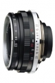

Cosina 35/2.5 Color Skopar Pan
一支适应性广泛的标准人文镜
小巧的体积，高超的画质，解析度锐度俱佳。 逆光表现完美，也就不难理解为何原配没有遮光罩。 F2.5的光圈几乎适应一切人文纪实题材，扫街利器。 色彩深沉凝重，艳丽而不夸张，是对SKOPAR的完美演绎。
全开下边角表现较差，且画面边缘的像场有些古怪。。。
一枚挺不错的镜头。
畸变很小，几乎没有。色彩还原正常，无传说中偏冷现象。眩光控制较好，做工不错，手感极佳，小巧轻便。
拨杆在使用云台时不方便。